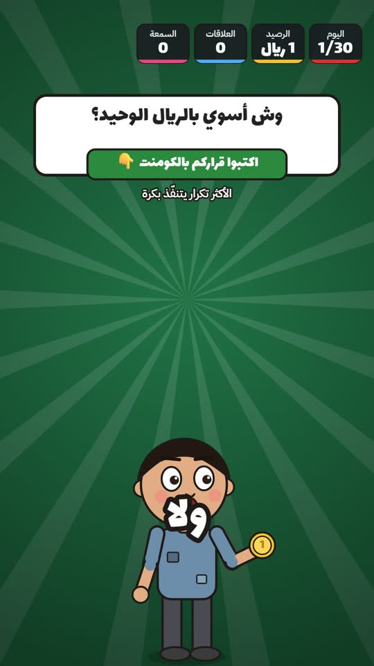

أساعدك تطلع فايرل في دقائق
مسلسل كرتون كامل
لحسابك، بالكود
أعطها فكرة حساب، وتطلع لك الشخصيات والقرية والعدّادات والكابشن والصوت، وحلقة جاهزة للنشر خلال دقائق. كل شي مرسوم بالكود، والشي الوحيد من برّا هو صوت ElevenLabs.
احصل على حكاية تون ·دفعة وحدة · تحديثات مستمرة · مكالمتين استشارة مجاناً. يوصلك على إيميلك من Gumroad.
- ويندوز + أي وكيل ذكاء اصطناعي
- 1080 × 1920 · 30 fps
- عربي من الأساس
- حلقة 70 ثانية = رندر 25 ثانية
- 6 محركات رسم
ما هي حكاية تون؟
حكاية تون أداة (مهارة) لوكلاء الذكاء الاصطناعي تصنع مسلسلات كرتون عربية قصيرة لإنستقرام وتيك توك ويوتيوب شورتس. تكتب لها فكرة الحساب، فتكتب السكربت باللهجة الخليجية، وتطلّع الصوت من ElevenLabs، وترسم الحلقة كاملة بالكود (شخصيات، خلفيات، عدّادات، كابشن عربي، مؤثرات صوتية)، وتسلّمك فيديو MP4 بمقاس 9:16 جاهز للنشر. ما تحتاج برنامج مونتاج ولا رسّام.
- السعر
- 49$ دفعة وحدة، مع تحديثات مجانية
- يشتغل على
- ويندوز مع Claude Code أو Codex أو Cursor أو Antigravity
- الناتج
- فيديو MP4 بدقة 1080×1920، 30 إطار، وصوت مضبوط للجوال
- السرعة
- حلقة 70 ثانية تترندر في حوالي 25 ثانية على كمبيوتر عادي
- اللغة
- عربي من الأساس (خليجي، فصحى، أو أي لهجة)، ويدعم الإنجليزي
- تكلفة الحلقة
- بس رصيد صوت ElevenLabs (حوالي 900 حرف لحلقة دقيقة)
مقارنة مع الطرق الثانية لصنع فيديو كرتون
| حكاية تون | مولّدات فيديو الذكاء الاصطناعي | رسّام / موشن جرافيك | تعلّم برامج الأنميشن | |
|---|---|---|---|---|
| نفس شكل الشخصية كل حلقة | ✅ ثابت لأنه مرسوم بالكود | ⚠️ يتغير بين المقاطع | ✅ | ✅ |
| كابشن عربي من اليمين لليسار | ✅ تلقائي كلمة كلمة | ❌ غالباً يدوي | ✅ يدوي | ✅ يدوي |
| وقت الحلقة | دقائق | دقائق لساعات | أيام | ساعات لأيام |
| التكلفة | 49$ مرة وحدة + الصوت | اشتراك ورصيد لكل مقطع | لكل فيديو | اشتراك برامج + وقت |
| قصة وسكربت وخطة نمو | ✅ داخل الأداة | ❌ | حسب الاتفاق | ❌ |
كيف تنصنع الحلقة
أنت تقول الفكرة، والأداة تكمّل الباقي
- 1
الفكرة والحساب
تختار نوع المسلسل، وتطلع لك أسماء الحساب والبايو وصورة البروفايل وقصة 30 حلقة.
- 2
السكربت
هوك بأول ثانيتين، أعلى تعليق من أمس، حدث، مفاجأة، وسؤال واحد بالنهاية. باللهجة الخليجية أو أي لهجة.
- 3
الصوت
صوت ElevenLabs بأمر واحد، مع توقيت كل كلمة عشان الكابشن والفم يمشون مع الكلام.
- 4
الرسم
المشاهد والكاميرا والعدّادات والكومنتات تتحرك على الكلمة نفسها. تشوف لوحة لقطات قبل الرندر.
- 5
الرندر والنشر
فيديو MP4 بصوت مضبوط للجوال، مع الوصف والهاشتاقات ونص الغلاف وستوري التصويت.
من حلقة حقيقية صنعتها الأداة
كل اللي تشوفه هنا مرسوم بالكود



وش داخل الأداة
استوديو كامل، مو قالب
🧍 شخصيات
ثوب وشماغ وغترة وعباية وحجاب وتيشيرت. 12 تعبير و20 حركة، وفم يتحرك مع الصوت.
🏘️ عوالم
قرية من فوق، شارع، سوق، دكان، بيت ومجلس، مقهى، محطة قطار، مزرعة، ومدينة المتابعين بأعلام الدول.
📊 عدّادات حيّة
اليوم 1/30، الرصيد، السمعة... تعدّ وتنبض وتطلع "+1" على الكلمة اللي تنقال.
💬 أدوات التفاعل
كروت كومنتات، قوانين اللعبة، شاشة واتساب، أسئلة النهاية، و"الحلقة الجاية بكرة".
🔤 كابشن عربي
كلمة كلمة من اليمين لليسار، والكلمات المهمة بلون مختلف. بدون تقطيع حروف.
🔊 مؤثرات صوتية
بوب، عملة، ووش، تنبيه... مولّدة بالكود ومركّبة على كل حركة. ما تحتاج مكتبة أصوات.
📈 خطة النمو
تجهيز الحساب، روتين يومي، خطة 30 يوم، وش تراقب بالإحصائيات، و6 طرق للربح.
📸 13 مهارة إنستقرام
هوكات، وصف، بروفايل، ردود الكومنتات، بحث الريلز الناجحة، وتنظيف النص من أسلوب الذكاء الاصطناعي.
مو أداة وتنساها
اللي تحصل عليه مع الشراء
🔄 تحديثات مستمرة
ميزات ومحركات جديدة تنزل لك مجاناً من نفس رابط التحميل.
📞 مكالمتين استشارة مجاناً
نطوّر محتواك، وكيف تنتجه بالذكاء الاصطناعي، وكيف تربح منه.
🎓 دورات قريباً
المشترين يكونون أول من يوصله أي دورة نطلقها.
6 أنواع حسابات
نفس الأداة، أفكار مختلفة
- تحدي 30 يوم: أنتم تقررون وأعلى تعليق يتنفّذ.
- مدينة المتابعين: كل متابع له بيت باسمه.
- حياة القرية: اقتصاد صغير وشخصيات تكبر مع الحساب.
- وش تسوي لو: قصص قصيرة تنتهي بخيار.
- حقائق بالكرتون: شرح مال وتاريخ وعلوم.
- يوميات بيت: عائلة ثابتة وموقف كل حلقة.
6 محركات رسم
لكل أسلوب محرّكه
- الأساسي: حلقات المسلسل اليومية.
- كرتون مرسوم: شخصيات عربية وخلفيات بإضاءة.
- شرح علمي: حيوانات وأرقام وعدّادات.
- انسخ الأسلوب: أعطه ريل، يسوي إعلانك بنفس الأسلوب.
- ثلاثي الأبعاد: قصص "في هذا العالم...".
- سينمائي: كروت مرسومة في عالم 3D.
وش تحتاج
- كمبيوتر ويندوز (ماك ما انجرّب للحين).
- Node.js و Python و FFmpeg (كلها مجانية).
- أي وكيل ذكاء اصطناعي: Claude Code أو Codex أو Antigravity أو Cursor أو غيرها. تعطيه الملف وتقول له "ثبّت المهارة".
- حساب ElevenLabs للصوت، أو تسجّل بصوتك.
- ربع ساعة تقريباً لأول تركيب، وسكربت التثبيت يركّب الناقص بنفسه.
وش مو داخل
- حسابات أو مفاتيح الذكاء الاصطناعي. تستخدم حقك.
- الأصوات نفسها. تطلعها من ElevenLabs.
- محرر بالسحب والإفلات. الشغل من الطرفية عن طريق Claude.
- تنفيذ الحلقات عنك. الأداة تسويها، وأنت تختار القصة.
بصراحة
الأداة تصنع الفيديو، لكن الانتشار يعتمد على فكرتك والهوك والثبات بالنشر. ما نضمن مشاهدات أو متابعين أو دخل.
أسئلة قبل الشراء
أسئلة شائعة
كيف أسوي مسلسل كرتون بالذكاء الاصطناعي؟
ثبّت حكاية تون، وافتح وكيل الذكاء الاصطناعي (مثل Claude Code) داخل مجلدها، وقل له فكرة المسلسل. يكتب السكربت، ويطلّع الصوت من ElevenLabs، ويرسم الحلقة، ويرندرها فيديو جاهز. كل حلقة جديدة تبدأ بجملة وحدة: "سو الحلقة 2".
هل أحتاج مونتاج أو After Effects أو CapCut؟
لا. الفيديو يطلع كامل: الرسم والحركة والكابشن والمؤثرات الصوتية ومستوى الصوت. تنشره مباشرة.
هل الشخصيات تبقى بنفس الشكل في كل الحلقات؟
إيه، وهذا أكبر فرق عن مولّدات الفيديو. الشخصية معرّفة بالكود (البشرة، الشعر، اللبس، العمر)، فتطلع نفسها بالضبط في كل حلقة.
كم تكلف الحلقة الوحدة؟
الأداة نفسها دفعة وحدة 49$. بعدها تكلفة كل حلقة هي رصيد صوت ElevenLabs بس، تقريباً 900 حرف لحلقة مدتها دقيقة.
يشتغل على الجوال أو الماك؟
لا. يحتاج كمبيوتر ويندوز. الماك ما انجرّب للحين.
أقدر أربح من الفيديوهات اللي أسويها؟
إيه. الفيديوهات ملكك، وتقدر تنشرها وتربح منها وتسوي فيها إعلانات.
لازم أعرف برمجة؟
لا. تكلّم وكيل الذكاء الاصطناعي بالعربي وهو يشغّل الأوامر. التثبيت أول مرة بأمر واحد.
يشتغل مع غير Claude؟
إيه. يشتغل مع أي وكيل يقرأ الملفات ويشغّل الأوامر: Claude Code و Codex و Antigravity و Cursor وغيرها، على ويندوز.
وش المكالمتين المجانية؟
بعد الشراء تحجز مكالمتين استشارة: نطوّر فكرة محتواك، وكيف تنتجه بالذكاء الاصطناعي، وكيف تربح من صناعة المحتوى. تحجزها بإيميل مع رقم طلبك.
الأداة تتحدث؟
إيه. نطوّرها باستمرار ونضيف ميزات ومحركات، وكل تحديث ينزل لك مجاناً من نفس رابط التحميل.
أقدر أغيّر الشخصيات والألوان؟
إيه. كل شخصية تتحدد بسطور بسيطة (لون البشرة، الشعر، اللبس، العمر)، وتقدر تضيف خلفيات جديدة.
أقدر أبيع الأداة أو أشاركها؟
لا. الرخصة لاستخدامك الشخصي ولصنع فيديوهاتك. إعادة البيع أو المشاركة ممنوعة.
كيف أستلم الأداة؟
بعد الدفع في Gumroad يوصلك رابط التحميل على إيميلك مباشرة.
هل الأداة تابعة لـ Anthropic أو ElevenLabs أو إنستقرام؟
لا. أداة مستقلة تشتغل معها، وما هي تابعة لها ولا معتمدة منها.
Hikaya Toon in English
Hikaya Toon is a skill for AI coding agents (Claude Code, Codex, Cursor, Antigravity) that produces complete Arabic cartoon series episodes for Instagram Reels, TikTok and YouTube Shorts. It writes the script, generates the voice with ElevenLabs, draws every frame in code (characters, sets, live counters, right-to-left word-by-word Arabic captions, synthesized sound effects) and renders a 1080x1920 MP4 ready to post. Characters stay identical across episodes. Windows, one-time price of $49, free updates, two free consulting calls.
ابدأ مسلسلك اليوم
احصل على حكاية تون ·الخصوصية
نحفظ إيميلك ورقمك لما تكتبها قبل الدفع، عشان نتواصل معك بخصوص طلبك والتحديثات والمكالمات. نقيس الزيارات بشكل مجهول (كم وقت بقيت بالصفحة ووين وصلت) عشان نحسّن الموقع، بمعرّف عشوائي في متصفحك بدون اسمك. ما نبيع بياناتك ولا نشاركها مع أحد. الدفع كله في Gumroad وما نشوف بيانات بطاقتك. تبي نحذف بياناتك؟ راسلنا على الإيميل تحت.